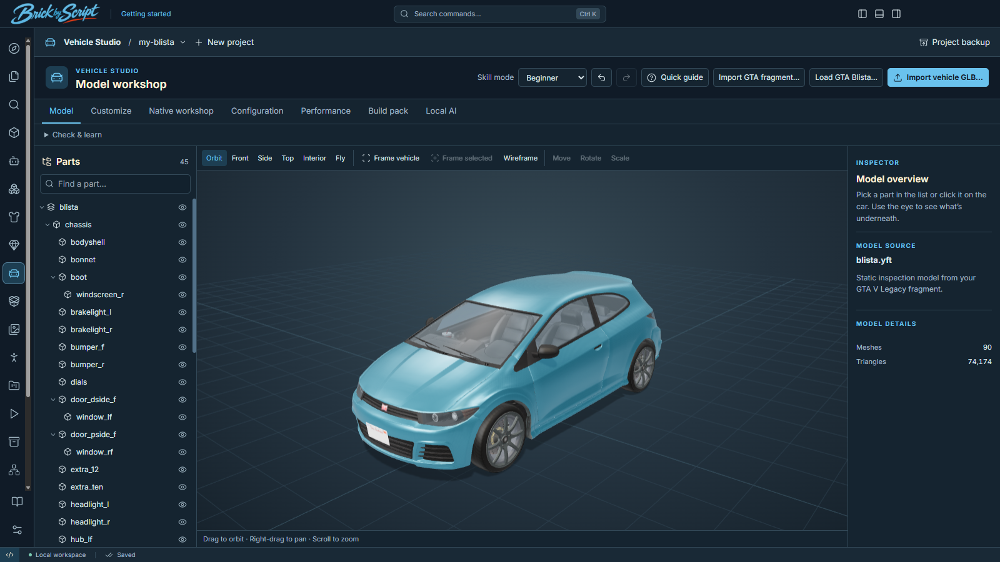

Customize an imported vehicle
Bring a real GTA vehicle into the workshop, inspect its parts and prepare a native source before building a pack.


Choose your source#
Vehicle Studio is included in public alpha 0.20.2. The original sample coupe teaches selection and navigation, but it is not a rigged GTA vehicle.
Use Load GTA Blista… to read that vehicle from your own GTA V Legacy installation. For another compatible car, choose Import GTA fragment… and supply its base YFT and matching texture dictionaries. Import vehicle GLB… accepts a supported general model; a GLB by itself does not provide all native vehicle behavior.
Inspect before editing#
- In Model, choose Frame vehicle to see the whole car.
- Select a part in the hierarchy or viewport. Use Frame selected for a close look, and visibility controls to inspect what lies underneath.
- Read the model-source information and any Check & learn messages. Resolve missing textures with the matching source YTDs.
- Save the project before experimenting with appearance or native-source changes.
The static inspection model lets you examine geometry and parts. It does not simulate driving, damage, doors or suspension in the GTA engine.
Inspect vehicle parts with a right-click#
In 0.19.1, right-click a row in Parts to show or hide that part, or choose Show all parts. A focused row supports Shift+F10 or the keyboard Menu key.
These controls change preview visibility so you can inspect the model. They do not remove parts from the linked native vehicle source or establish their in-game visibility.
In 0.19.2: Right-click a visible vehicle part to open its actions directly. These commands still affect preview visibility, not the linked native source. Right-drag still controls the camera; dragging, pointer cancellation and releasing outside the canvas do not open a menu. Blank canvas provides applicable frame/show-all actions. Focus the canvas and use Shift+F10 for keyboard access.
Make a controlled change#
Open Customize and try one paint or wheel adjustment. Check clearance from the front and side. For artwork, import a PNG under Livery, choose Place logo on car, then position it on a suitable surface using its UVs.
A top-projected logo or preview shader override can look convincing while still requiring a different native treatment. Review the app's diagnostics instead of assuming every viewport material change is ready for export.
In Configuration, use a unique spawn name and make small handling changes. Compare them on the same driving route after export.
Prepare the native source#
Open Native workshop. Choose Create .blend from YFT…, or Link vehicle .blend… for a compatible Sollumz source. Use Inspect linked source to examine its bones, collision and detail levels. After editing and saving in Blender, select Refresh model from source.
In Build pack, select vehicles with linked sources and choose Build vehicle ZIP… or Build resource folder…. Read the build report and test-drive.txt, then test the stated spawn name in your development server.
Check doors, steering, collision, textures and distant LODs in game. Editor triangle counts are geometry statistics, not measured in-game FPS.